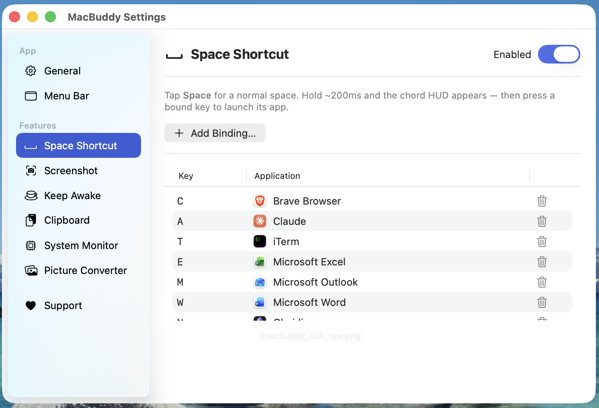
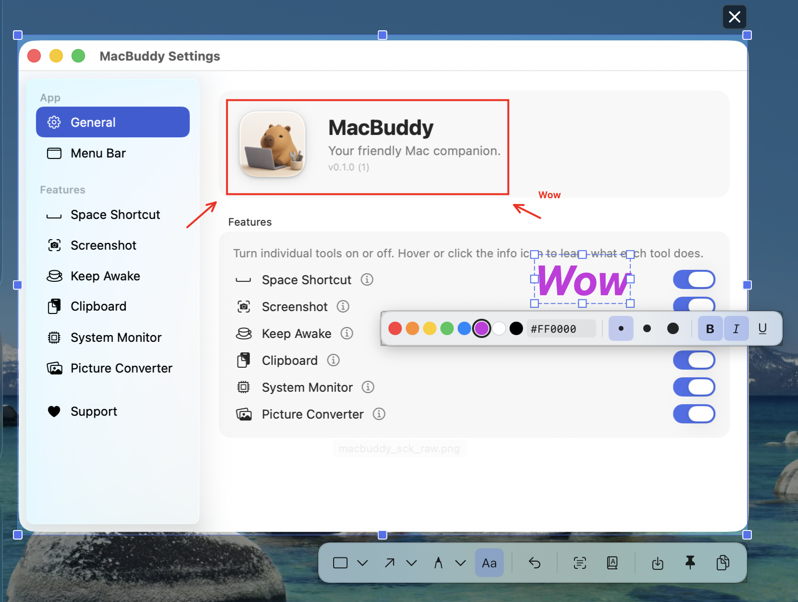

Space Shortcut
Hold Space and tap a key to instantly launch or focus your most-used apps.
Six handy menu-bar tools, wrapped in one tidy app. Capture screenshots, launch apps with Space, keep your Mac awake, browse clipboard history, watch CPU + memory, and convert pictures — all from a single buddy in your menu bar.

Each tool is independent — turn off the ones you don't need from Settings.
Hold Space and tap a key to instantly launch or focus your most-used apps.
Capture a region of the screen with a global hotkey, then annotate, copy, save, or pin it.
Prevents your Mac from sleeping or dimming the display for a chosen duration.
Keeps a history of recent clipboard items so you can paste anything you copied earlier.
Adds a menu-bar status item showing live CPU, memory, and other system stats.
Drag-and-drop converter between PNG, JPEG, HEIC, TIFF, GIF, AVIF, ICO, BMP, ICNS, JP2.
Settings, hotkeys, clipboard history, and the menu-bar status item.




Free for personal use. macOS 14 (Sonoma) or later. Apple Silicon & Intel.
Found a bug? Want a new tool inside MacBuddy? Tell us — issues land straight in the project's GitHub.
Something not working? Open a bug report — we'll be notified on GitHub.
Open bug template →Got an idea for a new tool inside MacBuddy? Pitch it.
Open feature template →Stuck on permissions or hotkeys? Drop a question.
Open question template →You'll need a GitHub account — we use GitHub Issues so the conversation stays public and searchable. Prefer email? atlasbioin4@gmail.com.